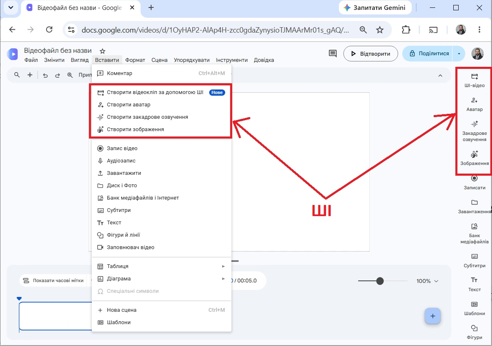
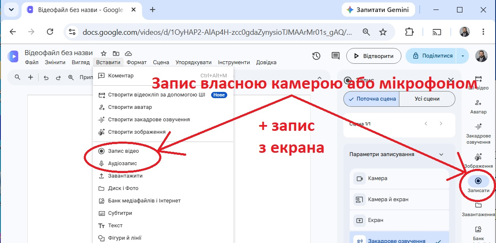
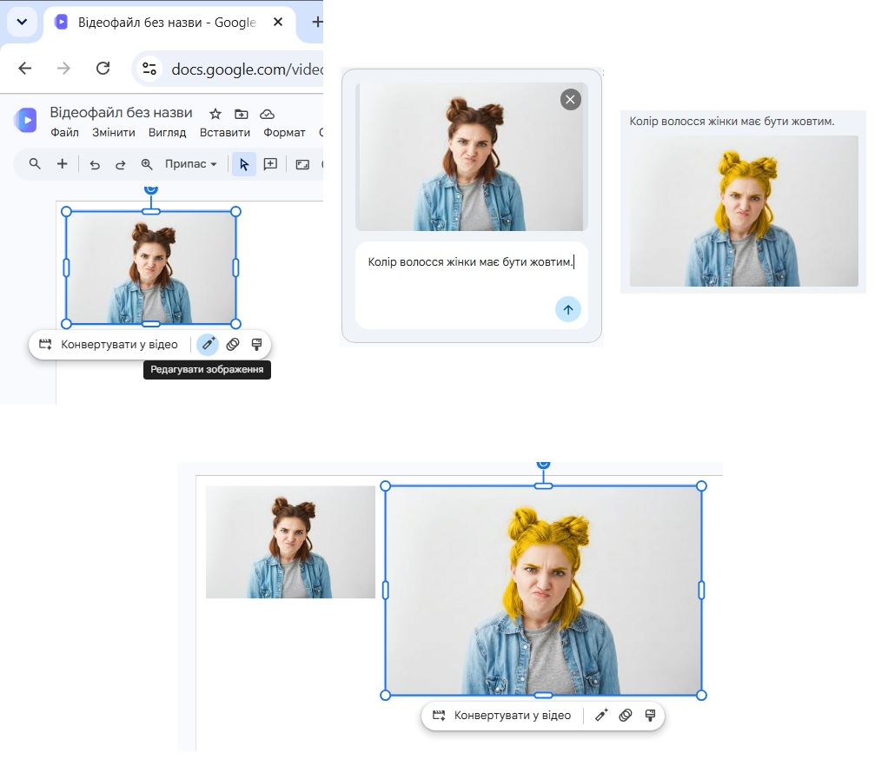
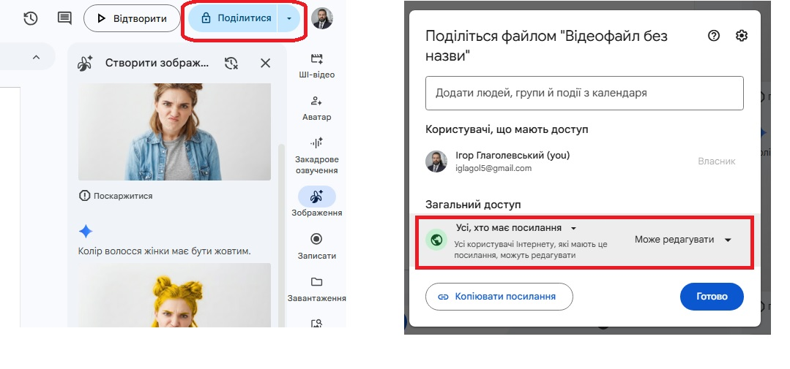
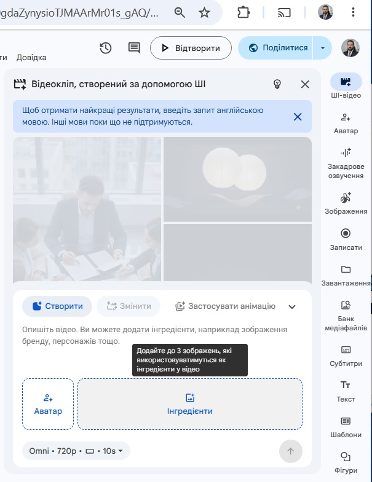

<table style="height: 221px; margin-left: auto; margin-right: auto;" width="688">
<tbody>
<tr style="height: 11px;">
<th style="width: 680.12px; height: 11px; background-color: yellow;">
<p><iframe src="menu.htm" width="800" height="110"></iframe></p>
</th>
</tr>
<tr style="height: 254px;">
<td style="width: 680.667px; height: 254px; vertical-align: top;">
<p style="text-align: justify;">До цієї пори ми розглядали Google Vids як інструмент редагування чи поєднання готових фото, аудіо або відеоматеріалів. Ми можемо використовувати програму навіть для створення аудіо, відео чи фотоматеріалів. Для цього нам достатньо письмових описів того, що ми хочемо побачити або почути.</p>
<p style="text-align: justify;">Ці можливості можна отримати, звернувшися до кожної з них через меню Вставити або на панелі справа.</p>
<p style="text-align: center;"></p>
<p style="text-align: justify;">Закадрове озвучення передбачає можливість прописати у полі, що виникне справа за звернення до команди, текст, який має пролунати, і обрати голос, який має озвучити придуманий вами текст. У такий спосіб ви створюєте авторську аудіодоріжку вашого фільма, навіть якщо не можете чи не маєте бажання вмикати диктофон і записувати промову власним голосом.</p>
<p style="text-align: justify;">На таких самих засадах створюється і відеоаватар. Але від закадрового озвучення він відрізняється тим, що обирається не лише голос, а і голова на статичному тлі, яка промовлятиме ваш текст. Аватари популярні у навчальних або рекламних відеоматеріалах у випадках, коли сам творець відео не має можливості чи бажання робити відеозапис власного обличчя для усного звернення (хоча редактор надає і таку можливість).</p>
<p style="text-align: center;"></p>
<p style="text-align: justify;">Зображення можна створити текстовим описом, і що точніше опишете деталі, то кращий отримаєте результат. Все, що не згадаєте в описі зображення, штучний інтелект промалює на свій розсуд. Ви можете описувати як реальну ситуацію для зображення так і нереальну. Вам потрібен портрет молодого чоловіка, який жив у XIII столітті? Пропишіть опис саме так. Якщо потрібен трамвай, який у небі протаранив літак, штучний інтелект може й таке уявити і зобразити. Словесним описом можна міняти деталі в тому зображенні, що зберігається у вашій цифровій колекції. Вставте це зображення до вашої сцени і скомандуйте редагування зображення, як показано на малюнку нижче.</p>
<p style="text-align: center;"></p>
<p style="text-align: justify;">На підставі тільки тексту, або тандема фото+текст можна створити епізод художнього фільму тривалістю 10 секунд. Але пам'ятайте: якщо ви не придбали пакет Google AI, то на безоплатній основі ви можете створити не більше за 10 епізодів або аватарів на місяць. Далі вам доведеться обирати між переходом на платний пакет цифрових послуг Google AI, чекати на початок наступного календарного місяця або перейти на той обліковий запис від Google, з якого ви ще не вичерпали згадані ліміти (одна з причин, чому бажано окрім основного акаунта Google мати кілька додаткових). Для продовження будь-коли редагувати ваш проект з будь-якого акаунта, на який ви перемкнете Google Vids, активуйте доступ з правом на редагування.</p>
<p style="text-align: center;"></p>
<p style="text-align: justify;">Повернемося до техніки виконання. Отже, ми обрали команду створення ШІ-відео. Пропишемо сценарій:</p>
<p style="text-align: justify;">Зустрічаються на вулиці двоє чоловіків. Один каже: "Привіт, ти давно був у Полтаві?" Другий відповідає: "Щойно повернувся звідти".</p>
<p style="text-align: justify;">Зауважу: в сценарії ми можемо писати не тільки пряму мову, а і описи місцевості, зазначати, хто є персонажі, як поводять себе. Пряму мову завжди прописуємо в лапках, щоб система точно розуміла, що проговорюється, а що є описом становища, поведінки тощо. Якщо все з першого разу згенерується без збоїв (інколи система видає німе відео, відео озвучене не тією мовою, яку очікували почути або персонажі проговорюють не свій текст, а співрозмовника &mdash; доводиться переписувати і повторно замовляти генерування епізода), то ви побачите все за прописаним сценарієм. Деталі, які ви не згадували, система покаже на свій розсуд. В нашому випадку це міська або сільська вулиця, кількість будинків у кадрі, їхній зовнішній вигляд, зовнішність персонажів тощо. Згенероване відео можна одразу прийняти до своєї робочої сцени в проекті або подовжити. Ви пишете тільки сценарій продовження. Якщо раніше робили опис декорації, повторно робити цього не треба. Згенероване відео зникне і за кілька секунд повернеться подовженим ще на 10 секунд згідно з вашим сценарієм. З наступними випадками подовження за додатковими сценаріями буде така сама ситуація.</p>
<p style="text-align: justify;">Якщо вам не байдуже, де відбувається ваша відеосцена, як виглядають персонажі, то слід робити фільм на підставі фото і текстового сценарія, фактично йдеться про оживлення фото за сценарієм. Якщо подати просто фото, система буде сама вигадувати, як поводять себе речі і люди на фото, хто що каже тощо.</p>
<p style="text-align: center;"></p>
<p style="text-align: justify;">До трьох фото можна додати як довідкові інгредієнти на базі яких, конкретні персонажі будуть діяти у конкретній місцевості. Візьміть свої фото, збережені на жорсткому диску комп'ютера, або у хмарному сховищі Google; як варіант, збережіть і потім задійте знайдені в інтернеті.</p>
<p style="text-align: justify;">І наостанок поради щодо безпеки і комфорту роботи.</p>
<ul>
<li style="text-align: justify;">Завжди пишіть сценарії оживлення чи редагування фото в третій особі, навіть якщо на фото ви. </li>
<li style="text-align: justify;">Уникайте конкретних імен і прізвищ у сценаріях, навіть якщо знаєте, хто на фото (закон про захист персональних даних). Для сценарію достатньо сказати: чоловік (хлопець, дівчина, жінка) на фото робить... каже... злиться, радіє тощо.</li>
<li style="text-align: justify;">Сценарії краще заздалегідь прописувати в будь-якому текстовому редакторі і потім вставляти через буфер обміну до текстових полей в Google Vids (будь-який збій роботи сайта або інша несподіванка призведе до втрати тексту в полі онлайн-інтерфейса для сценаріїв і вказівок).</li>
</ul>
<p style="text-align: justify;">Буває, що за постановки епізоду, на початку чи в кінці виникає зайвий відеоряд чи озвучення. Ви вже знаєте, як цього позбутися. </p>
<p style="text-align: justify;">Пам'ятайте, що штучний інтелект допускає під час генерування фільма так званні кіноляпи, таким грішать не лише живі знімальні групи. Слід бути готовим терпляче повторювати генерування, за потреби редагуючи сценарій для уточнень.</p>
</td>
</tr>
<tr style="height: 68.52px;">
<th style="width: 680.667px; height: 68.52px; background-color: cyan;">Розробка сайта Ігоря Глаголевського, 2026 р.</th>
</tr>
</tbody>
</table>